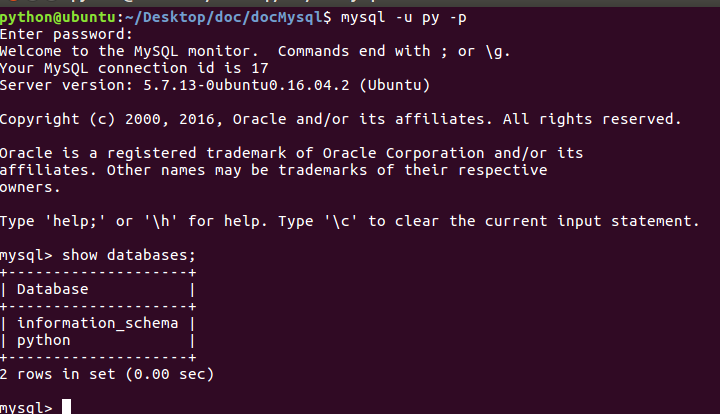
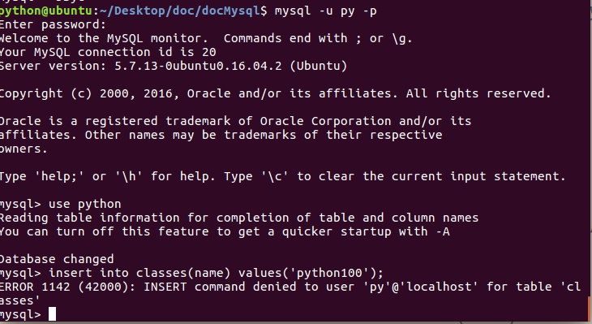

账户管理
- 在生产环境下操作数据库时，绝对不可以使用root账户连接，而是创建特定的账户，授予这个账户特定的操作权限，然后连接进行操作，主要的操作就是数据的crud
- MySQL账户体系：根据账户所具有的权限的不同，MySQL的账户可以分为以下几种
- (最高权限)服务实例级账号：启动了一个mysqld服务进程，即为一个数据库实例；如果某用户如root,拥有服务实例级分配的权限，那么该账号就可以删除所有的数据库、连同这些库中的表
- 数据库级别账号：对特定数据库执行增删改查的所有操作
- 数据表级别账号：对特定表执行增删改查等所有操作
- 字段级别的权限：对某些表的特定字段进行操作
- 存储程序级别的账号：对存储程序进行增删改查的操作
- 账户的操作主要包括创建账户、删除账户、修改密码、授权权限等
- 注意：进行账户操作时，需要使用root账户登录，这个账户拥有最高的实例级权限
- 下面主要演示数据库级操作权限，因为通常都使用这种方式
授予权限
- 语法
- 常用权限主要包括：create、alter、drop、insert、update、delete、select
- 如果分配所有权限，可以使用all privileges
- 如果账户不存在则创建账户，如果账户存在则授予权限
grant 权限名称 on 数据库资源 to 账户1,账户2,... with grant option;
- 例：创建python数据库的账户，用户名为py1，密码为123
- 使用root账户登录执行如下命令
- python.*表示数据库中所有表
- 用户名后面写@
- 百分号%表示此账户可以使用任何ip的主机登录
grant all privileges on python.* to 'py1'@'%' identified by '123';
- 使用ctrl+d退出root的登录，改用py账户登录
mysql -u py -p
回车后根据提示输入“123”
- 登录后效果如下图

授予、回收权限
- 如果不希望某用户拥有此权限，可以将此权限从用户上撤销
- 语法如下：使用root登录
revoke 权限列表 on 数据库名.* from '用户名'@'主机';
例：
revoke insert on python.* from 'py1'@'%';
- 使用ctrl+d退出root的登录，改用py账户登录，运行insert命令
use python;
insert into clssses(name) values('python100');
- 运行命令后效果如下图

查看所有用户
- 使用root登录，所有用户及权限信息，都存储在mysql数据库的user表中
- 查看user表的结构
desc user\G;
- 查看所有用户
- 账户的密码是一个加密的字段串，而不是明文存储，推荐使用加密的方式存储
select host,user,authentication_string from user;
修改密码
- 语法1：不需登录
mysqladmin -u py1 -p '旧密码' password '新密码'
例：
mysqladmin -u py1 -p '123' password '123456'
- 语法2：使用root登录，修改mysql数据库的user表
- 直接修改字段值时，需要使用password()函数进行加密运算
update user set authentication_string=password('新密码') where user='用户名';
例：
update user set authentication_string=password('123') where user='py1';
删除账户
- 语法1：使用root登录
drop user '用户名'@'主机';
例：
drop user 'py1'@'%';
- 语法2：使用root登录，删除mysql数据库的user表中数据
- 如果主机的字母大写时，使用法语1删除失败，采用此种方式，推荐使用语法1删除用户
delete from user where user='用户名';
例：
delete from user where user='py1';
常见安全漏洞
- sql注入：用户输入不合法，如输入了单引号
- 程序员呀惹不起
- 通过攻击了服务器，从而拿到服务器上的所有数据库信息，之前csdn、12306的用户都被攻下来，在黑市上销售，前期的时候数据可以卖到十几万
- 撞库：利用从别处得到的数据库用户名和密码，尝试在另外一个站点上登录，从而得到更多信息，比如从csdn买来的数据，到淘宝上尝试登录
- 解决：严格验证用户输入，增加验证码，在数据库表中存储加密的密码数据
- 对用户的建议：不要在多个站点间使用相同的密码